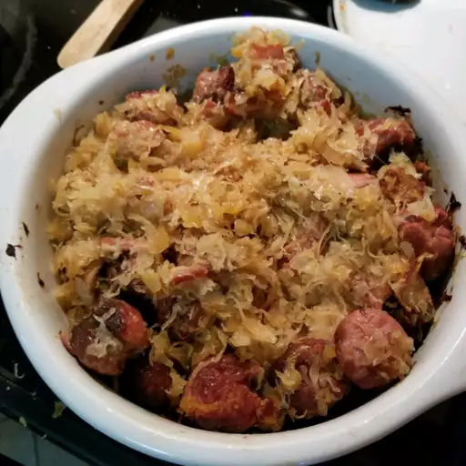

Sausage and Sauerkraut

Description
Sauerkraut and sausage is a hearty dish that combines tangy, fermented cabbage (sauerkraut) with savory sausages, typically bratwurst or kielbasa.
The sauerkraut's sharp, sour flavor complements the rich, meaty taste of the sausages, often cooked together with onions, garlic, and spices.
It is a popular comfort food in German and Eastern European cuisines.
Ingredients
- 2 pounds sauerkraut, rinsed and drained
- 1 tablespoon caraway seeds (Optional)
- ¼ cup brown sugar
- 1 apple, diced
- cooking spray
- ½ pound bacon, cut into 1-inch pieces
- 1 large onion, chopped
- 1 ½ pounds kielbasa sausage, cut into 1-inch thick slices
Steps
- Gather the ingredients.
- Place sauerkraut, caraway seeds, brown sugar, and apple into a large saucepan over medium-low heat, and bring to a simmer.
Reduce heat to low, and cook for 2 hours, stirring occasionally.
- Preheat the oven to 325 degrees F (165 degrees C). Grease a 9x13-inch baking dish.
Place bacon and onion into a skillet over medium heat, and cook until bacon is almost crisp and onion is beginning to brown, about 10 minutes.
Stir the bacon mixture into the sauerkraut.
- Brown kielbasa sausage in remaining bacon grease in the same skillet until sausage begins to brown, 10 to 15 minutes; stir into the sauerkraut mixture.
- Spoon the sauerkraut and sausage mixture into the prepared baking dish. Bake in the preheated oven until bubbling, about 1 hour.